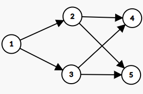

算法导论20.2 Exercises 答案
20.2-1
\(\begin{aligned} \begin{array}{|l|l|l|}\hline v&d&\pi\\\hline 1&\infty&\text{NIL}\\\hline 2&\infty&\text{NIL}\\\hline 3&0&\text{NIL}\\\hline 4&\infty&\text{NIL}\\\hline 5&\infty&\text{NIL}\\\hline 6&\infty&\text{NIL}\\\hline \end{array} \underrightarrow{(3,6)} \begin{array}{|l|l|l|}\hline v&d&\pi\\\hline 1&\infty&\text{NIL}\\\hline 2&\infty&\text{NIL}\\\hline 3&0&\text{NIL}\\\hline 4&\infty&\text{NIL}\\\hline 5&\infty&\text{NIL}\\\hline 6&1&3\\\hline \end{array} \underrightarrow{(3,5)} \begin{array}{|l|l|l|}\hline v&d&\pi\\\hline 1&\infty&\text{NIL}\\\hline 2&\infty&\text{NIL}\\\hline 3&0&\text{NIL}\\\hline 4&\infty&\text{NIL}\\\hline 5&1&3\\\hline 6&1&3\\\hline \end{array} \underrightarrow{(5,4)} \begin{array}{|l|l|l|}\hline v&d&\pi\\\hline 1&\infty&\text{NIL}\\\hline 2&\infty&\text{NIL}\\\hline 3&0&\text{NIL}\\\hline 4&2&5\\\hline 5&1&3\\\hline 6&1&3\\\hline \end{array} \underrightarrow{(4,2)} \begin{array}{|l|l|l|}\hline v&d&\pi\\\hline 1&\infty&\text{NIL}\\\hline 2&3&4\\\hline 3&0&\text{NIL}\\\hline 4&2&5\\\hline 5&1&3\\\hline 6&1&3\\\hline \end{array} \end{aligned}\)
20.2-2
\(\begin{aligned} &\begin{array}{|l|l|l|}\hline v&d&\pi\\\hline r&\infty&\text{NIL}\\\hline s&\infty&\text{NIL}\\\hline t&\infty&\text{NIL}\\\hline u&0&\text{NIL}\\\hline v&\infty&\text{NIL}\\\hline w&\infty&\text{NIL}\\\hline x&\infty&\text{NIL}\\\hline y&\infty&\text{NIL}\\\hline z&\infty&\text{NIL}\\\hline \end{array} \underrightarrow{(u,s)} \begin{array}{|l|l|l|}\hline v&d&\pi\\\hline r&\infty&\text{NIL}\\\hline s&1&u\\\hline t&\infty&\text{NIL}\\\hline u&0&\text{NIL}\\\hline v&\infty&\text{NIL}\\\hline w&\infty&\text{NIL}\\\hline x&\infty&\text{NIL}\\\hline y&\infty&\text{NIL}\\\hline z&\infty&\text{NIL}\\\hline \end{array} \underrightarrow{(u,t)} \begin{array}{|l|l|l|}\hline v&d&\pi\\\hline r&\infty&\text{NIL}\\\hline s&1&u\\\hline t&1&u\\\hline u&0&\text{NIL}\\\hline v&\infty&\text{NIL}\\\hline w&\infty&\text{NIL}\\\hline x&\infty&\text{NIL}\\\hline y&\infty&\text{NIL}\\\hline z&\infty&\text{NIL}\\\hline \end{array} \underrightarrow{(u,y)} \begin{array}{|l|l|l|}\hline v&d&\pi\\\hline r&\infty&\text{NIL}\\\hline s&1&u\\\hline t&1&u\\\hline u&0&\text{NIL}\\\hline v&\infty&\text{NIL}\\\hline w&\infty&\text{NIL}\\\hline x&\infty&\text{NIL}\\\hline y&1&u\\\hline z&\infty&\text{NIL}\\\hline \end{array} \underrightarrow{(s,r)} \begin{array}{|l|l|l|}\hline v&d&\pi\\\hline r&2&s\\\hline s&1&u\\\hline t&1&u\\\hline u&0&\text{NIL}\\\hline v&\infty&\text{NIL}\\\hline w&\infty&\text{NIL}\\\hline x&\infty&\text{NIL}\\\hline y&1&u\\\hline z&\infty&\text{NIL}\\\hline \end{array} \underrightarrow{(s,v)} \begin{array}{|l|l|l|}\hline v&d&\pi\\\hline r&2&s\\\hline s&1&u\\\hline t&1&u\\\hline u&0&\text{NIL}\\\hline v&2&s\\\hline w&\infty&\text{NIL}\\\hline x&\infty&\text{NIL}\\\hline y&1&u\\\hline z&\infty&\text{NIL}\\\hline \end{array}\\ \underrightarrow{(y,x)}& \begin{array}{|l|l|l|}\hline v&d&\pi\\\hline r&2&s\\\hline s&1&u\\\hline t&1&u\\\hline u&0&\text{NIL}\\\hline v&2&s\\\hline w&\infty&\text{NIL}\\\hline x&2&x\\\hline y&1&u\\\hline z&\infty&\text{NIL}\\\hline \end{array} \underrightarrow{(r,w)} \begin{array}{|l|l|l|}\hline v&d&\pi\\\hline r&2&s\\\hline s&1&u\\\hline t&1&u\\\hline u&0&\text{NIL}\\\hline v&2&s\\\hline w&3&r\\\hline x&2&y\\\hline y&1&u\\\hline z&\infty&\text{NIL}\\\hline \end{array} \underrightarrow{(x,z)} \begin{array}{|l|l|l|}\hline v&d&\pi\\\hline r&2&s\\\hline s&1&u\\\hline t&1&u\\\hline u&0&\text{NIL}\\\hline v&2&s\\\hline w&3&r\\\hline x&2&y\\\hline y&1&u\\\hline z&3&x\\\hline \end{array} \end{aligned}\)
20.2-3
由于点的颜色仅仅用于判断点的状态，只要进了队列之后，那么当前点的颜色就没有用处了。因此黑色和灰色状态可以合并，与白色状态一起，我们就可以只使用\(1\)比特来表示点的状态。
接下来将消除点的颜色。一个点如果曾经在队列中生存过，那么它的距离值不应该是\(\infty\)，而是一个具体的整数，因此我们可以通过这个来判断点是否进入过队列。修改后的伪代码如下：
1 | BFS'(G, s) |
20.2-4
运行时间从\(O(V+E)\)变成\(O(V^2)\)，因为对于每个刚刚出队的节点\(u\)，所有节点\(v\in V\)都要被访问一遍，以判断\((u,v)\)是否在\(E\)中。这种结构下的伪代码为：
1 | BFS''(G, s) |
20.2-5
首先我们说明邻接表的顺序和\(s,u\)两点之间的距离\(\delta(s,u)\)是独立的。直观上，从\(s\)到\(u\)的距离\(\delta(s,u)\)是这个图本身固有的属性，而与\(G\)的存储结构没有任何关系。此外，定理20.5则证明了广度优先算法BFS的正确性，且并没有通过邻接表的顺序性来论证算法BFS能够计算出\(u.d=\delta(s,u)\)，因此原来的结论是成立的。
不过虽然\(u.d\)的值不依赖于邻接表的遍历顺序，但是\(u.\pi\)却依赖于邻接表的顺序。图20.3遍历\(s\)节点的相邻节点顺序是\(r,u,v\)，因此\(r\)先入队，\(r\)会先比\(u\)出队。此时\(r\)则会扩展出节点\(t\)，因此\(t.\pi =r\)。相反，如果遍历\(s\)节点的相邻节点顺序是\(u,r,v\)，那么\(u\)会先比\(r\)出队。此时\(u\)则会扩展出节点\(t\)，那么\(t.\pi =u\)。因此\(\pi\)值和邻接表顺序相关。
20.2-6
\(G=(V,E),V=\{1,2,3,4,5\},E=\{(1,2),(1,3),(2,4),(2,5),(3,4),(3,5)\}\)，\(G\)如图所示：

如果源点\(s=1\)，那么无论按照那种遍历方式，如下的BF树不可能由算法BFS产生：

因为如果节点\(2\)比节点\(3\)先进入队列，那么它将会完成对\(4\)和\(5\)的扩展；反之依然，总而言之，\(2,3\)这两个节点之一将会一次性将节点\(4,5\)进行扩展，不可能由上图那样，节点\(2\)扩展一个\(4\)，节点\(3\)扩展出一个\(5\)。
20.2-7
本质上是判断这个图是不是一个二分图，我们可以直接使用广度优先搜索直接为相邻的两个节点打上不同的标签，如果发现有的节点已经打上了标签并且和当前点的标签相同，那么说明这个列表是无法构造成功的。
1 | DETERMINE-WRESTLERS(G) |
\(\star\) 20.2-8
这个算法的基本流程比较简单，只需要进行两次BFS即可。伪代码如下：
1 | GEN-DIAMETER(T) |
第一次找到一个最远端点（叶节点）\(s\)，第二次从\(s\)搜索找到另一个最远叶子节点\(t\)，那么路径\(s-t\)就是\(T\)的一个直径。
由于树的边数\(|E|=\Theta(V)\)，因此算法GEN-DIAMETER的时间复杂度为\(\Theta(V)\)。
这个算法的正确性证明过程如下：
如果\(s\)是其中一条直径的端点，那么通过第二次BFS得到的最远节点\(t\)是直径的另一个端点，这是显而易见的。因此我们的主要是使用反证法证明：第一次通过对\(u\)进行BFS得到的\(s\)是直径的一个端点。
我们使用\(a-b-\dots-c-d\)表示一条从\(a\)到\(d\)的简单路径，并且中途还经过了\(b\)和\(c\)等点。此处分两种情况进行证明：
\(u\)在直径上
那么假设直径是\(a-u-b\)，并且\(a,b\)为这两个端点。不妨假设\(\delta(u,a)\ge \delta(u,b)\)。
那么，对于任意\(v\in V\)，路径\(u-v\)只能和\(u-a\)与\(u-b\)其中一条会有除\(u\)之外的公共点。那么必定会有\(\delta(u,v)\le \delta(u,a)\)。如果\(\delta(u,v)>\delta(u,a)\)，考虑如下两种情况：
- 如果 \((u-a\cap u-v)-\{u\}=\varnothing\)，那么路径\(v-u-a\)是一条比原直径更长的路径。
- 如果 \((u-a\cap u-v)-\{u\}\neq\varnothing\)，那么路径\(v-u-b\)是一条比原直径更长的路径。
无论那种情况都将证明\(a-u-b\)不是直径，因此必定满足\(\forall v\in V,\delta(u,v)\le \delta(u,a)\)，也就是有\(d(u,s)=d(u,a)\)。
下图则对应了这两种情况（其中前两副图对应了第1种情况的两种形式，第三幅图则对应第2种情况）

\(u\)不在直径上
那么假设直径是\(a-w-b\)，并且\(a,b\)为这两个端点。不妨假设\(\delta(u,a)\ge \delta(u,b)\)，且\(w\)是有向路径\(u\rightarrow a\)出现在路径\(a-b\)上的第一个点。那么我们可以知道，第一次BFS算法得到的\(s\)必定满足路径\(u-s\)和直径\(a-b\)相交，这个可以用反证法来说明：否则，按照定义，有\(\delta(u,s)\ge \delta(u,a)\)。由于\(u\neq w\)，并且有\(\delta(w,a)=\delta(u,a)-\delta(u,w),\delta(w,s)=\delta(u,s)+\delta(u,w)\)，从而得到\(\delta(w,s)>\delta(w,a)\)，这说明\(s-w-b\)是一条比原直径更长的路径。如下图所示。

因此，路径\(u-s\)应该和\(a-b\)相交。假设\(u-s\)和\(a-b\)所相交的一段路径为\(w-x\)。
- 如果\(x\)在路径\(w-a\)中，那么路径\(s-x-w-b\)是一条比原直径更长的路径。为此，只能有\(x=s=a\)。
- 如果\(x\)在路径\(w-b\)中，那么路径\(s-x-w-a\)是一条比原直径更长的路径。为此，只能有\(x=s=b\)。
下图则对应了这两种情况。

最终完成全过程的证明。